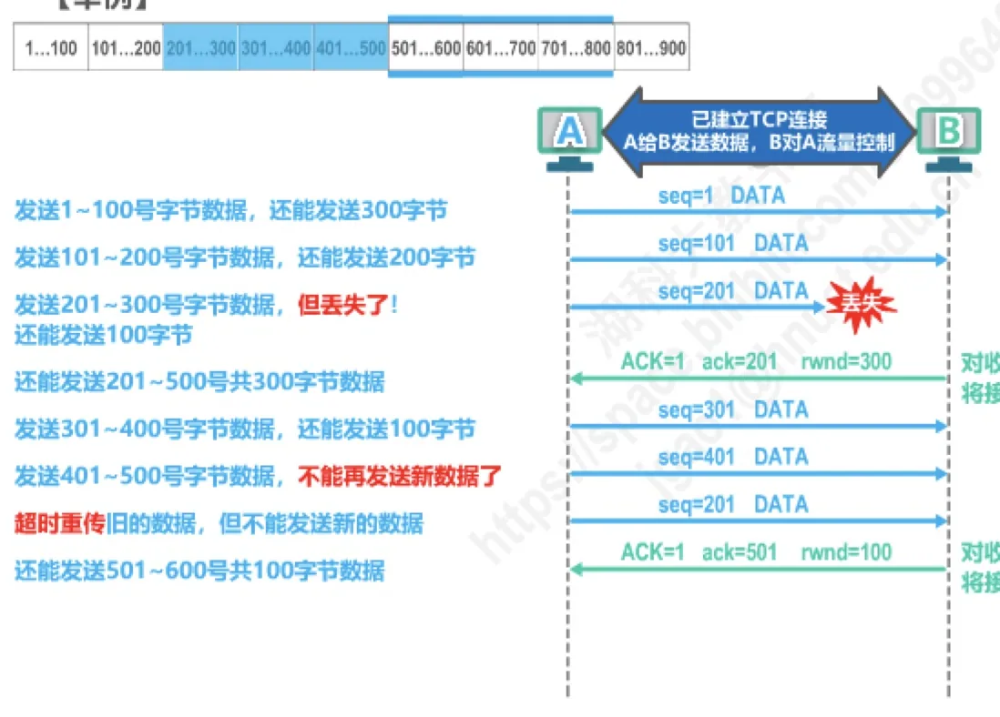
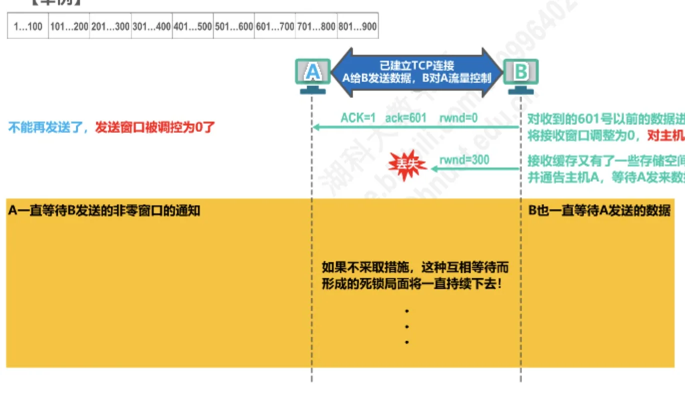

计算机通信与网络 · 第 5 章 运输层
5.4 TCP的流量控制
TCP 提供可靠传输，但可靠的前提是接收方「接得住」。如果发送方一味猛发，接收方的接收缓存迟早会被填满，后续到达的数据只能被丢弃，白白浪费网络资源。本节讲 TCP 如何用流量控制解决这个问题：接收方通过通告自己的接收窗口 rwnd 来限制发送方的发送窗口，并重点处理接收窗口为 0 时的死锁问题。全节围绕原讲义的一个完整例子展开，一步不错地跟下来，机制就清楚了。
1. 什么是流量控制
一般来说，我们总是希望数据传输得更快一些。但如果发送方把数据发送得过快，接收方就可能来不及接收，这就会造成数据的丢失。
所谓流量控制（flow control），就是让发送方的发送速率不要太快，要让接收方来得及接收。这里要特别注意一点：流量控制要解决的不是网络中间链路太拥挤的问题，而是接收方自己的处理能力和缓存空间有限的问题——「来不及」的主语是接收方，不是网络。网络太拥挤造成的问题由拥塞控制来解决，见 5.5 节。
TCP 实现的流量控制并不需要新增什么报文类型，而是利用滑动窗口机制：接收方把自己当前还能接收多少字节（接收窗口 rwnd）写在确认报文里通告给发送方，发送方据此调整自己的发送窗口。因此可以说，TCP 接收方利用自己的接收窗口的大小来限制发送方发送窗口的大小。
2. 用滑动窗口实现流量控制
把发送方的发送窗口想成一条可以滑动的「尺子」：尺子左端由已收到的确认号 ack 决定，长度由接收方通告的 rwnd 决定。也就是说，
发送窗口的右沿 = ack + rwnd - 1接收方每发回一个确认报文，ack 前移、rwnd 可能变大也可能变小，A 的发送窗口就跟着相应的「滑动」与「伸缩」。窗口内尚未发送的字节就是 A 当前还可以发送的数据；一旦窗口收缩到把未发送的字节全部排除在外，A 就必须停下来等待新的通告。
下面的例子中，A 一开始可以连续发送 400 字节（即发送窗口为 400），而 B 会根据自己的接收缓存情况，用 rwnd 逐步把 A 的窗口收紧。
3. 举例：B 对 A 的流量控制全过程
把原讲义从第 1203 页到第 1220 页的每一步按时间顺序列成表 1。表中 A 的「还能发送」指发送窗口内尚未发送的字节数。
| 步骤 | A 的动作 | B 的通告 | A 还能发送 |
|---|---|---|---|
| 1 | 发送 1～100 号字节（序号 1） | — | 还能发送 300 字节 |
| 2 | 发送 101～200 号字节（序号 101） | — | 还能发送 200 字节 |
| 3 | 发送 201～300 号字节（序号 201），该报文段在传输中丢失 | — | 还能发送 100 字节 |
| 4 | — | ACK=1，ack=201，rwnd=300：对 201 号以前的数据进行累计确认，并把接收窗口调整为 300 | 窗口右沿推到 501，还能发送 201～500 号共 300 字节 |
| 5 | 发送 301～400 号字节（序号 301） | — | 还能发送 100 字节 |
| 6 | 发送 401～500 号字节（序号 401） | — | 不能再发送新数据了 |
| 7 | 重传计时器超时，重传 201～300 号字节（序号 201） | — | 超时重传旧的数据，但不能发送新的数据 |
| 8 | — | ACK=1，ack=501，rwnd=100：对 501 号以前的数据进行累计确认，并把接收窗口调整为 100 | 还能发送 501～600 号共 100 字节 |
| 9 | 发送 501～600 号字节（序号 501） | — | 不能再发送新数据了 |
| 10 | — | ACK=1，ack=601，rwnd=0：对 601 号以前的数据进行累计确认，并把接收窗口调整为 0 | 发送窗口被调控为 0，不能再发送了 |

这个例子有四处值得停下来想一想：
- 确认是累计的。第 4 步 B 通告 ack=201，只是说明「201 号以前的字节我都收到了」，并不追究 201～300 号为什么还没到——是否为丢失、是否要重传，由 A 通过超时重传机制自己判断，这正是 5.6、5.7 节的内容。
- 流量控制不改变可靠性机制。第 3 步丢的是数据报文段，第 7 步重传它；而第 10 步之后 A 停发，不是因为数据丢了，而是因为窗口为 0。
- 窗口的收缩是「由接收方说了算」。rwnd 从 400 一路降到 0，A 能发多少完全取决于 B 的通告，A 自己无法「争取」。
- 发送窗口 = min(拥塞窗口, 接收窗口)。这里展示的只是接收窗口 rwnd 对发送方的限制；实际的发送窗口还要与拥塞窗口 cwnd 取小值，两个限制同时起作用（见 5.5 节与原讲义第 1223 页的真题解析）。
4. 零窗口与死锁：持续计时器与零窗口探测报文
接收窗口被调整为 0 之后，A 停止发送；等 B 的接收缓存腾出空间，B 会主动通告一个新的、非零的窗口，A 再继续发送。这个「等通告」的过程本身没问题，但如果这个窗口更新的通告丢失了，麻烦就来了（图 3）：
- B 的接收缓存又有了一些存储空间，于是把接收窗口调整为 300，并通告主机 A，然后等待 A 发来数据；可是这个通告丢失了；
- A 只收到过 rwnd=0 的通告，以为 B 仍然没有空间，于是继续等待 B 的通告。
双方都在等对方先动，A 等窗口更新，B 等数据，谁也不发报文。如果不采取措施，这种互相等待而形成的死锁局面将一直持续下去。

解决死锁的办法是让 A 主动去「问一声」：
- TCP 发送方收到接收方的零窗口通知后，应启动一个持续计时器（persistence timer）；
- 持续计时器超时后，A 向 B 发送一个零窗口探测报文（该报文携带 1 字节数据，以便对方必须应答）；
- B 收到探测报文后，对它进行确认并通告自己当前的接收窗口。如果此时窗口仍为 0，A 收到后再次启动持续计时器，过一段时间再探测；
- 一旦某次探测得到的通告是 rwnd=300，A 就知道 B 已经有空间，于是打破死锁局面，继续发送数据。
要点在于：零窗口探测报文本身携带 1 字节数据，而 B 无论窗口是否为 0 都必须对它作出确认，于是「确认」就成了一条必定会被送回 A 的通道，窗口通告因此不会再悄无声息地丢失。
5. 原讲义中的一道真题
流量控制经常与拥塞窗口一起考，原讲义用 2010 年的一道真题做了示范。
【2010 年题 39】主机甲和主机乙之间建立了一个 TCP 连接，TCP 最大段长度为 1000 字节。若主机甲的当前拥塞窗口为 4000 字节，在主机甲向主机乙连续发送两个最大段后，成功收到主机乙发送的第一个段的确认段，确认段中通告接收窗口大小为 2000 字节，则此时主机甲还可以向主机乙发送的最大字节数是（ ）
A. 1000 B. 2000 C. 3000 D. 4000
解析的关键是那条取小值的规则：TCP 发送方的发送窗口 = min［自身拥塞窗口，TCP 接收方的接收窗口］。题目没有给出甲原有发送窗口的初始值，就取拥塞窗口的值作为发送窗口值，因此一开始甲可以连发 4000 字节。
接下来算窗口里还剩多少没发：
- 甲连续发送两个最大段，共 2000 字节，序号分别是 0～999 和 1000～1999；
- 随后收到对第一个段（0～999）的确认，且通告接收窗口大小为 2000 字节，于是甲的发送窗口 = min(4000, 2000) = 2000 字节；
- 确认了 0～999 之后窗口整体前移，新的发送窗口覆盖 1000～2999，其中 1000～1999（第二个段）已经发送但尚未被确认，只有 2000～2999 这 1000 字节还是「已授权但未发送」的。
所以此时主机甲还可以向主机乙发送 2000～2999 号字节数据，共 1000 个字节，答案是 A。
本节小结
- 流量控制的目的是让发送方的发送速率不要太快，使接收方来得及接收，避免因接收缓存溢出而丢失数据；它针对的是接收方的接收能力，与针对网络拥塞的拥塞控制是两回事。
- TCP 利用滑动窗口机制实现流量控制：接收方用确认报文通告接收窗口 rwnd，发送方据此调整发送窗口，
发送窗口右沿 = ack + rwnd - 1；发送窗口取 min(拥塞窗口, 接收窗口)。 - 接收方可以随时收紧窗口：原讲义的例子中 rwnd 依次被通告为 300、100、0，发送方的发送窗口随之收缩到 0 而停发；确认对整个窗口内的数据是累计确认的。
- 窗口为 0 后，若接收方腾出空间后发出的窗口更新通告丢失，双方会互相等待形成死锁；解决办法是发送方收到零窗口通知后启动持续计时器，超时便发送携带 1 字节数据的零窗口探测报文，迫使接收方确认并重新通告窗口。
- 流量控制与可靠传输、拥塞控制相互配合：后面的 5.5 节讲拥塞窗口 cwnd 如何与 rwnd 一起决定发送窗口，5.6 节讲超时重传时间如何选择，5.7 节综合讲 TCP 可靠传输的实现。